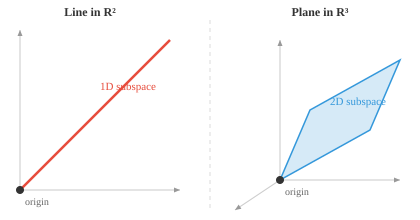
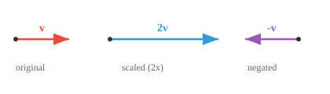
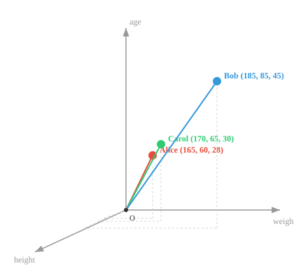
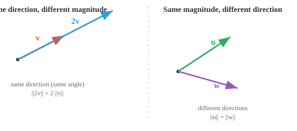
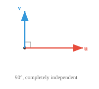
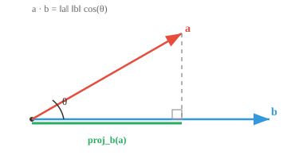

Maths, CS & AI Compendium · Chapter 01
Vectors for the Mechanical Mind
You have already solved every problem in this chapter. In Engineering Mechanics you resolved forces into components, took moments about a point, and rotated a stress element until the shear vanished. That is nearly the whole of Chapter 01, under different names.
So this page does two jobs. First it hands you the dictionary: each tool you drilled for GATE, next to the name machine learning gives it. Second — and this matters more — it marks precisely where the dictionary stops working. Every analogy here comes with a box showing you its failure point, because the places your mechanical intuition breaks are exactly where machine learning starts doing something genuinely new. An analogy you cannot see the edge of is a trap, not a teaching aid.
The bridge
Read this table as a claim to be tested, not a summary. The right-hand column is the honest part: some of these are the same object with two names, some share only a structure, and one of them does not survive the crossing at all.
| What you did for GATE | What ML calls it | How good is the match? |
|---|---|---|
| Resolving \(\mathbf{F}\) into \(F_x, F_y, F_z\) | Feature vector / embedding | Same algebra, different meaning. See §02 — this is the big one. |
| Parallelogram law of forces | Vector addition | Identical. Same axiom, same picture. |
| Direction cosines \(l, m, n\) | L2 normalisation, unit vector | Identical. \(l^2+m^2+n^2=1\) is \(\|\hat{\mathbf{a}}\|_2=1\). |
| Work \(W = \mathbf{F}\cdot\mathbf{d}\) | Dot product, attention score | Identical operation. Interpretation differs. |
| Moment \(\mathbf{M} = \mathbf{r}\times\mathbf{F}\) | Cross product | Identical — and it does not generalise. See §06. |
| von Mises vs. Tresca yield criterion | L2 vs. L∞ norm | Same structure. One state, two size functions. |
| Rotating to principal axes (Mohr) | Change of basis, PCA | Same structure. Orthonormality is the catch. |
| Virtual work \(\delta W = \mathbf{F}\cdot\delta\mathbf{r}\) | Duality, covectors | Identical, and deeper than you were told. |
| Sparse banded stiffness matrix in FEM | Sparse vectors | Same property, same reason to exploit it. |
The compendium's own study method is shadow reading: read a heading, close the page, write the explanation from memory, then re-read only what you missed. The interactive panels here are built for the second half of that loop — predict the number before you drag, then drag and check. §11 is a set of prompts to shadow-read against.
Every section here also ends with a Compare with the source panel holding the original compendium text, verbatim and unedited, for the passage that section was built from. Open it whenever you want to check what Henry actually wrote against what I have made of it. Appendix A lists every place the two differ.
A vector space is a set of objects you can add together and scale by numbers, such that you never land outside the set. That closure requirement is not bookkeeping — it is the whole definition doing real work.
You have verified these axioms before without being told that is what you were doing. When you added two forces by the parallelogram law and got a third force — not a moment, not a pressure, but another force in the same space — you used closure under addition. When you doubled a load and the resultant doubled, that was closure under scalar multiplication.
A set \(V\) over a field of scalars \(F\) (take \(F = \mathbb{R}\)) with two operations, addition and scalar multiplication, satisfying:
A useful non-example: the integers \(\mathbb{Z}\) are not a vector space over \(\mathbb{R}\). Scale \(3\) by \(0.5\) and you get \(1.5\), which has left the set.
The payoff is that anything obeying these rules inherits every theorem of linear algebra for free. A \(28\times28\) greyscale image is 784 numbers, so it is a vector in \(\mathbb{R}^{784}\): adding two images blends them, scaling one brightens it. A one-second audio clip at 44.1 kHz is a vector with 44,100 entries, and mixing two clips is vector addition. Polynomials form a vector space too. Vectors do not have to look like arrows.
Mechanics quietly distinguishes three kinds of vector. A bound vector has a fixed point of application (a load at a specific node). A sliding vector may move along its line of action (a force on a rigid body — the principle of transmissibility). A free vector may be moved anywhere (a couple, a uniform velocity).
Linear algebra has only the third kind. Every vector in \(V\) is a free vector: a displacement from the origin, position irrelevant. This is why the compendium insists a subspace must pass through the origin — an off-centre plane is an affine set, not a subspace, because it has no zero vector. When you applied transmissibility to slide a force along its line of action, you were using structure that lives in mechanics, not in \(V\). Do not expect ML objects to carry a point of application.


Compare with the source01. vector spaces.md
# Vector Spaces
*Vector spaces form the mathematical playground where ML lives. This file covers vector addition, scalar multiplication, closure axioms, subspaces, and why nearly everything in AI is represented as vectors.*
- Think of a Vector Space as a specific kind of playground where mathematical objects live, and each object is called a **vector**.
- Vector space is formally defined as an collection of vectors that can be added and scaled together without leaving the space.
- A useful non-example: the integers $\mathbb{Z}$ are **not** a vector space over the real numbers, since scaling $3$ by $0.5$ gives $1.5$, which falls outside the set. The "without leaving the space" part of the definition is doing real work.
- For geometric intuition in machine learning (ML), we will always think of vectors as a point in Euclidean space, represented by it's coordinates.
- The vector $\mathbf{a}$ (denoted mathematically as lowercase letters in bold) has $n$ coordinates, each representing a position along an axis.
$$\mathbf{a} = [a_1, a_2, a_3]$$

- The vectors in the vector space live under a very specific, unbreakable set of rules:
- **Vector Addition (Combining)**:
You can take any two vectors and combine them to create a new one.
Think of vectors as instructions for movement.
If vector A means "walk 3 steps forward" and vector B means "walk 2 steps right,"
adding them (A + B) creates a new, single instruction: "walk 3 steps forward and 2 steps right."
- **Scalar Multiplication (Scaling)**:
You can take any vector and scale it using a regular number (a "scalar").
You can stretch it, shrink it, or reverse it.
If vector A is "walk 3 steps forward," scaling it by 2 makes it "walk 6 steps forward."
Scaling it by -1 flips it entirely to "walk 3 steps backward."
- The **dimension** of a vector space is the number of independent directions it contains. $\mathbb{R}^2$ is 2-dimensional (needs 2 coordinates), while $\mathbf{a}$ above lives in $\mathbb{R}^3$.
- We can for instance represent any object, say, a human, as a vector, where $h_1$ = height in cm, $h_2$ = weight in kg, $h_3$ = age.
$$\mathbf{h} = [185, 75, 30]$$
- We have now created a vector space with a vector representing a human.
- We can represent multiple humans, and see how close or apart they are!

- We can add more features, creating a rich representation of a human, often called feature vectors in ML.
- The more unique and meaningful features you have, the more descriptive the feature vector is, an important factor to remember.
- Beyond 3 dimensions, vectors become very difficult to visually inspect, inspiring a field of mathematics called **Linear Algebra**.
- Now, **Linear algebra** is the study of vectors, vector spaces and mappings between vectors.
- We represent almost every thing in AI/ML as vectors, making linear algebra the bedrock of the field.
- Vector addition can be performed by placing one vector on the tail of the other visually, and drawing from the origin to the endpoint.

- For two vectors $\mathbf{a} = (a_1, a_2)$ and $\mathbf{b} = (b_1, b_2)$: $\mathbf{a} + \mathbf{b} = (a_1 + b_1, a_2 + b_2)$
- Vectors can also be subtracted, with all addition rules applying too.
- Multiplying a vector by a scalar scales the vector by that factor in the same direction.

- For a scalar $c$ and vector $\mathbf{v} = (v_1, v_2)$: $c\mathbf{v} = (cv_1, cv_2)$
- **Closure under Addition**: If you add any two vectors from the vector space, the result is also a vector within the same space: If $\mathbf{u} \in V$ and $\mathbf{v} \in V$, then $\mathbf{u} + \mathbf{v} \in V$
- **Closure under Scalar Multiplication**: If you multiply any vector from the vector space by a scalar, the result is a vector within the same space: If $\mathbf{v} \in V$ and $c \in F$, then $c\mathbf{v} \in V$
- **Commutativity of Addition**: For any two vectors $\mathbf{u}$ and $\mathbf{v}$: $\mathbf{u} + \mathbf{v} = \mathbf{v} + \mathbf{u}$

- Both paths through the parallelogram arrive at the same point.
- **(Zero Vector)**: There exists a vector $\mathbf{0}$ such that for any vector $\mathbf{v}$: $\mathbf{v} + \mathbf{0} = \mathbf{v}$

- **Additive Inverse**: For every vector $\mathbf{v}$, there exists a vector $-\mathbf{v}$ such that: $\mathbf{v} + (-\mathbf{v}) = \mathbf{0}$

- **Distributivity 1**: For any scalar $c$ and vectors $\mathbf{u}$, $\mathbf{v}$: $c(\mathbf{u} + \mathbf{v}) = c\mathbf{u} + c\mathbf{v}$

- Scaling the sum (gold) gives the same result as summing the scaled vectors.
- **Distributivity 2**: For any scalars $c$, $d$ and vector $\mathbf{v}$: $(c + d)\mathbf{v} = c\mathbf{v} + d\mathbf{v}$
- **Associativity**: For any scalars $c$, $d$ and vector $\mathbf{v}$: $(cd)\mathbf{v} = c(d\mathbf{v})$
- **Identity Element**: For any vector $\mathbf{v}$: $1\mathbf{v} = \mathbf{v}$, where $1$ is the multiplicative identity in the field of scalars.
- Some examples of vector spaces:
- **$\mathbb{R}^n$ (n-dimensional space)**: all real numbers in an n-dimensional space, example vector [1,4,3000...nth item], add two points or scale one, and you still land somewhere on the plane.
- **Grayscale images**: a $28 \times 28$ image is just 784 pixel intensities, i.e. a vector in $\mathbb{R}^{784}$. Adding two images (blending) or scaling one (brightening) gives another image of the same size.
- **Audio signals**: a 1-second clip sampled at 44.1kHz is a vector with 44,100 entries. Mixing two clips together is just vector addition.
- **Polynomials**: adding two polynomials or scaling one by a number gives another polynomial, so they form a vector space too. Vectors don't have to look like arrows!
- A **subspace** is just a smaller playground inside the bigger one. Imagine 3D space as a room. A flat sheet of paper passing through the centre of the room is a subspace, and so is a single straight wire through the centre.
- The key requirement is that the subspace must pass through the origin. If you shift that sheet of paper off-centre, it stops being a subspace because the zero vector is no longer on it.

- All the same rules from the vector space (addition, scaling, closure) still work inside a subspace. You can add or scale vectors within it and never "fall off" into the larger space.
- A line through the origin is a 1-dimensional subspace, a plane through the origin is a 2-dimensional subspace, and the full space is a subspace of itself.
- In ML, subspaces appear naturally. High-dimensional data often has structure that lives on a lower-dimensional subspace. Techniques like PCA find that subspace so we can work with the data more efficiently.Here is the first genuinely new move. In mechanics your vectors had three components because space has three dimensions. In machine learning a vector has as many components as you have features, and that number is set by the problem, not by geometry. A person might be \([\text{height}, \text{weight}, \text{age}]\) in \(\mathbb{R}^3\), a thumbnail image is \(\mathbb{R}^{784}\), and a sentence embedding is routinely \(\mathbb{R}^{768}\) or \(\mathbb{R}^{4096}\).

The algebra is unchanged — every axiom in §01 still holds. What changes is what the numbers mean, and that change is severe enough to deserve the longest warning on this page.
Every vector you added in four years of mechanics had homogeneous units. You added newtons to newtons. You would have been marked wrong for computing \(\sqrt{F_x^2 + v_y^2}\), because force and velocity do not belong in the same Pythagorean sum.
Now look at the compendium's own example, \(\mathbf{h} = [185\,\text{cm},\ 75\,\text{kg},\ 30\,\text{yr}]\), and its magnitude:
That number is dimensionally meaningless. It is a sum of squared centimetres, squared kilograms and squared years. Physical vectors are also rotation-covariant: rotate your axes and the components transform together, because they are three projections of one arrow. Rotating a feature space mixes kilograms into centimetres — legal arithmetic, physical nonsense.
This is not a pedantic footnote. It is the reason feature scaling exists, and skipping it silently changes your answers. Watch it change one below.
The unit trap, in numbers
Three people. Ask the simplest ML question there is: which one is A most similar to? Answer it with plain Euclidean distance, first measuring height in centimetres, then in metres. Nothing about the people changes — only the ruler.
| Person | Height | Mass | d(A, ·) in cm, kg | d(A, ·) in m, kg |
|---|---|---|---|---|
| A | 180 cm | 80 kg | — | — |
| B | 150 cm | 81 kg | 30.02 | 1.04 ← nearest |
| C | 179 cm | 90 kg | 10.05 ← nearest | 10.00 |
Work it through once by hand. In centimetres, \(d(A,B)=\sqrt{30^2+1^2}=\sqrt{901}\approx 30.02\) while \(d(A,C)=\sqrt{1^2+10^2}=\sqrt{101}\approx 10.05\), so C wins. Convert height to metres and the height gap shrinks by a factor of 100 while the mass gap does not: \(d(A,B)=\sqrt{0.30^2+1^2}\approx 1.04\) against \(d(A,C)=\sqrt{0.01^2+10^2}\approx 10.00\), so B wins.
A \(k\)-nearest-neighbour classifier, a \(k\)-means clustering, a recommendation
engine — all of them would return a different answer purely because someone typed
1.80 instead of 180. The fix is standardisation:
replace each feature \(x_j\) by \(z_j=(x_j-\mu_j)/\sigma_j\) so every axis is measured in
standard deviations, a dimensionless unit that no longer depends on your choice of cm or m.
You have met this before: non-dimensionalisation. Reynolds number, Nusselt number, the Buckingham π theorem — the entire habit of stripping units before comparing regimes. Feature standardisation is the same instinct applied to data. A mechanical engineer should find this the most natural preprocessing step in ML, not the most mysterious.
Compare with the source01. vector spaces.md (feature-vector passage)
- We can for instance represent any object, say, a human, as a vector, where $h_1$ = height in cm, $h_2$ = weight in kg, $h_3$ = age.
$$\mathbf{h} = [185, 75, 30]$$
- We have now created a vector space with a vector representing a human.
- We can represent multiple humans, and see how close or apart they are!

- We can add more features, creating a rich representation of a human, often called feature vectors in ML.
- The more unique and meaningful features you have, the more descriptive the feature vector is, an important factor to remember.
- Beyond 3 dimensions, vectors become very difficult to visually inspect, inspiring a field of mathematics called **Linear Algebra**.
- Now, **Linear algebra** is the study of vectors, vector spaces and mappings between vectors.
- We represent almost every thing in AI/ML as vectors, making linear algebra the bedrock of the field.Magnitude is Pythagoras in \(n\) dimensions, and direction is what survives when you divide magnitude out:
That second operation has a name you already know. The components of \(\hat{\mathbf{a}}\) in three dimensions are the direction cosines \(l, m, n\), and the identity you memorised for GATE,
is nothing other than the statement \(\|\hat{\mathbf{a}}\|_2 = 1\). When an ML paper says it "L2-normalises the embeddings", it is computing direction cosines in 768 dimensions. No new idea, just more axes.

Parallel, orthogonal, independent
Two vectors are parallel when one is a scalar multiple of the other, \(\mathbf{a}=k\mathbf{b}\); they lie on one line through the origin and carry no new directional information between them. They are orthogonal when moving along one produces zero progress along the other — walking north never moves you east.
A set is linearly dependent if some member can be built from the others by scaling and adding, and linearly independent if none can. Orthogonal vectors are always independent; parallel vectors never are; any set containing \(\mathbf{0}\) is dependent.
A 3-D rigid body gives you six independent equilibrium equations. Write a seventh by summing moments about a different point and it will be a linear combination of the six — it adds a row but no information, and the system stays unsolvable. That is linear dependence, and it is the same failure mode as feeding a model two features that are exact multiples of each other. The compendium makes the data-side point: dependent samples skew a model toward whatever was oversampled.

Sparsity
A vector is sparse when most components are zero, \(\mathbf{s}=[0,0,3,0,0,0,1,0,0,0]\), and dense otherwise. Sparsity is not a geometric property — it is a storage and compute property, and it is worth real money: store only the nonzero positions and values, and both memory and arithmetic drop with the count of nonzeros rather than the dimension.
If you have assembled a global stiffness matrix, you have already exploited this. \(K\) is sparse and banded because each node couples only to its neighbours, and no finite element code ever stores the zeros. The reasoning that makes a banded solver fast is exactly the reasoning behind sparse vector formats in ML.
Compare with the source02. vector properties.md
# Vector Properties
*Vector properties describe the geometric and algebraic characteristics that define how vectors behave. This file covers magnitude, direction, unit vectors, equality, parallelism, orthogonality, and linear independence, the building blocks of every ML feature space.*
- The **magnitude** (or length) of a vector tells you *how far* it reaches. Think of it as the length of the arrow. For a vector $\mathbf{a} = (a_1, a_2, a_3)$, its magnitude is:
$$\|\mathbf{a}\| = \sqrt{a_1^2 + a_2^2 + a_3^2}$$
- This is just the Pythagorean theorem extended to higher dimensions and measuring the straight-line distance from the origin to the point.
- The **direction** of a vector tells you *where* it points; simply visualise a straight line from the origin to the coordinate's point.
- When origin is not explicitly specifies, we often imply (0,0,...0), the centerpoint, at least for visualisation purposes.
- Position doesn't matter, its always about displacement: a vector $(3, 2)$ drawn from the origin and the same $(3, 2)$ drawn from another point are still equal.

- Two vectors can have the same length but point in completely different directions, or point the same way but differ in length.

- Two vectors are **equal** if and only if all their corresponding components match; same length, same direction, the exact same arrow.
$$\mathbf{a} = \mathbf{b} \iff a_i = b_i \text{ for all } i$$
- Two vectors are **parallel** if one is a scalar multiple of the other. They point along the same line, either in the same direction or exactly opposite.
$$\mathbf{a} \parallel \mathbf{b} \iff \mathbf{a} = k\mathbf{b} \text{ for some scalar } k \neq 0$$

- If $k > 0$, they point the same way. If $k < 0$, they point in opposite directions. Either way, they lie on the same line through the origin.
- Intuitively, parallel vectors carry no "new" directional information. One is just a stretched or flipped version of the other.
- Two vectors are **orthogonal** (perpendicular) if they point in completely independent directions. Moving along one gives you zero progress along the other.

- Think of walking north and then walking east, these are orthogonal directions, no amount of walking north will ever move you east. We will encounter orthogonality very often.
- Orthogonality is central to ML: features that are orthogonal carry completely independent information, which is ideal for representation.
- More generally, any two vectors have an **angle** $\theta$ between them, ranging from $0°$ to $180°$.
- This angle captures the entire relationship between two directions: $0°$ means parallel (same direction), $180°$ means parallel (opposite direction), and $90°$ means orthogonal. Everything in between is a blend.
- Most vector relationships in ML live somewhere in this spectrum. Later, we will see exact tools (dot product, cosine similarity) to compute this angle.
- A set of vectors is **linearly dependent** if at least one of them can be built from the others by scaling and adding. It brings no new information to the set.
- For example, if $\mathbf{c} = 2\mathbf{a} + 3\mathbf{b}$, then $\mathbf{c}$ is redundant, you already have everything $\mathbf{c}$ offers through $\mathbf{a}$ and $\mathbf{b}$.
- Parallel vectors are always linearly dependent, since one is just a scaled copy of the other. Any set containing the zero vector is also linearly dependent.
- Vectors are **linearly independent** if none of them can be built from the others. Each one contributes a genuinely new direction. Orthogonal vectors are always linearly independent.
- Some intuition: if you want to study different humans and represent them as a vector, linearly dependent vectors (humans) will skew the observation in favour of the oversampled data point, an important factor in designing dataset for training AI.
- In 2D, two linearly independent vectors can reach any point in the plane. In 3D, you need three. This idea of "how many independent vectors you need" connects directly to dimension.
- A vector is **sparse** when most of its components are zero. The opposite, most components being nonzero, is called **dense**.
$$\mathbf{s} = [0, 0, 3, 0, 0, 0, 1, 0, 0, 0]$$
- Sparsity matters because it affects both storage and computation. Sparse vectors can be stored and processed much more efficiently by only tracking the nonzero entries.
- A **unit vector** is a vector with magnitude exactly 1. It purely represents a direction with no length information. You can turn any vector into a unit vector by dividing by its magnitude:
$$\hat{\mathbf{a}} = \frac{\mathbf{a}}{\|\mathbf{a}\|}$$
- This process is called **normalisation**. It strips away "how far" and keeps only "which way", this is an important factor in machine learning.
- The standard unit vectors point along each axis: $\hat{\mathbf{i}} = (1, 0, 0)$, $\hat{\mathbf{j}} = (0, 1, 0)$, $\hat{\mathbf{k}} = (0, 0, 1)$. Any vector can be written as a combination of these, e.g. $(3, 2, 4) = 3\hat{\mathbf{i}} + 2\hat{\mathbf{j}} + 4\hat{\mathbf{k}}$."How big is this vector?" has more than one defensible answer, and choosing between them changes what your model concludes. A norm measures one vector; a metric measures the gap between two.
All three are cases of the general \(L^p\) norm \(\|\mathbf{v}\|_p=\left(\sum_i |v_i|^p\right)^{1/p}\). As \(p\) grows the largest component contributes more and more, until in the limit only it matters.
- Non-negativity: \(\|\mathbf{v}\|\ge 0\), with equality only for \(\mathbf{0}\).
- Absolute homogeneity: \(\|c\mathbf{v}\|=|c|\,\|\mathbf{v}\|\).
- Triangle inequality: \(\|\mathbf{u}+\mathbf{v}\|\le\|\mathbf{u}\|+\|\mathbf{v}\|\) — the shortcut is never longer than the detour.
Every norm induces a metric by \(d(\mathbf{u},\mathbf{v})=\|\mathbf{u}-\mathbf{v}\|\), which adds symmetry and the identity of indiscernibles to that list. The converse fails: Hamming distance, the count of positions where two vectors differ, is a perfectly good metric that comes from no norm.
You have chosen between norms before
In machine design you were handed two yield criteria for the same stress state and told they disagree. That disagreement is a norm choice, and the correspondence is exact rather than poetic. Collect the three principal-stress differences into one vector:
Then the two criteria you drilled are literally two norms of that same vector:
von Mises is an L2 norm. Tresca is an L∞ norm. Same stress state, same vector, two different notions of "how big", and therefore two different safe/unsafe verdicts near the boundary — which is precisely why Tresca is the conservative one. The picture you memorised, a Tresca hexagon inscribed inside the von Mises ellipse, is the picture in the panel above: the L∞ ball inscribed in the L2 ball.
The correspondence above is exact, but the drawing needs one correction. The three components of \(\mathbf{d}\) sum to zero by construction, so \(\mathbf{d}\) is confined to a 2-D plane inside \(\mathbb{R}^3\) — the deviatoric, or π, plane. The L∞ unit ball in \(\mathbb{R}^3\) is a cube; sliced by that plane it gives a hexagon, which is exactly the Tresca surface you drew. The panel above shows the plain \(\mathbb{R}^2\) balls, so it renders a square. The norms are the same; the shapes differ because the yield surfaces live on a constrained slice.
Why ML cares: L1 and sparsity
Look at the diamond in the panel. Its extreme points sit on the axes, where one coordinate is zero. The circle has no such corners — it bulges equally in every direction. This geometric difference is the entire reason an L1 penalty (Lasso) drives coefficients to exactly zero and an L2 penalty (Ridge) only shrinks them toward zero: an optimisation pushed against a diamond tends to land on a corner, and a corner is a sparse solution.
The same logic governs distance. L2 squares each difference before summing, so one large discrepancy dominates; L1 sums absolute differences, so no single one takes over. If your data has outliers, that choice is a modelling decision, not a formatting detail.
Compare with the source03. norms and metrics.md
# Metrics and Norms
*Norms measure the size of a vector; metrics measure the distance between two vectors. This file covers L1, L2, and L-infinity norms, Euclidean and cosine distance, and why choosing the right distance function is critical for kNN, clustering, and retrieval in ML.*
- We know vectors have magnitude and direction. But how do we actually measure "how big" a single vector is, or "how far apart" two vectors are? This is where **norms** and **metrics** come in.
- In scalars, we know that 10 > 5, because their values quantify them, but how can we quantify a vector? It's **norm**, it measures the size of a single vector.
- The most familiar norm is the **Euclidean norm** (L2), which is just the magnitude formula we already know:
$$\|\mathbf{v}\|_2 = \sqrt{v_1^2 + v_2^2 + \cdots + v_n^2}$$
- But there are other ways to measure size. Imagine you are in a city with a grid of streets. You cannot walk diagonally through buildings, so the "length" of your journey is the total blocks walked along each street. This is the **Manhattan norm** (L1):
$$\|\mathbf{v}\|_1 = |v_1| + |v_2| + \cdots + |v_n|$$
- Or you might only care about the single largest component, ignoring the rest. This is the **Max norm** (L-infinity):
$$\|\mathbf{v}\|_\infty = \max(|v_1|, |v_2|, \ldots, |v_n|)$$
- All three are special cases of the **general Lp norm**:
$$\|\mathbf{v}\|_p = (|v_1|^p + |v_2|^p + \cdots + |v_n|^p)^{1/p}$$
- Setting $p = 2$ gives Euclidean, $p = 1$ gives Manhattan, and as $p \to \infty$ you get the Max norm. As $p$ grows, the largest component contributes more and more, until eventually only it matters.
- Every norm must obey three rules:
- **Non-negativity**: $\|\mathbf{v}\| \geq 0$, and $\|\mathbf{v}\| = 0$ only if $\mathbf{v} = \mathbf{0}$. Size is never negative, and only the zero vector has zero size.
- **Scaling**: $\|c\mathbf{v}\| = |c| \cdot \|\mathbf{v}\|$. Doubling a vector doubles its size.
- **Triangle inequality**: $\|\mathbf{u} + \mathbf{v}\| \leq \|\mathbf{u}\| + \|\mathbf{v}\|$. The shortcut is never longer than going the long way round.
- Now, a **metric** measures the distance *between* two vectors. Think of it as asking: "how far apart are these two points?"
- The simplest way to get a metric is to use a norm on the difference: $d(\mathbf{u}, \mathbf{v}) = \|\mathbf{u} - \mathbf{v}\|$. Subtract the two vectors, then measure the size of what remains.
- Using the Euclidean norm this gives us the familiar **Euclidean distance**:
$$d(\mathbf{u}, \mathbf{v}) = \sqrt{(u_1 - v_1)^2 + (u_2 - v_2)^2 + \cdots + (u_n - v_n)^2}$$
- Using the Manhattan norm gives **Manhattan distance**, the total difference along each axis, like counting city blocks between two locations.
- Every metric must obey four rules:
- **Non-negativity**: $d(\mathbf{u}, \mathbf{v}) \geq 0$. Distance is never negative.
- **Identity**: $d(\mathbf{u}, \mathbf{v}) = 0$ if and only if $\mathbf{u} = \mathbf{v}$. Zero distance means the same point.
- **Symmetry**: $d(\mathbf{u}, \mathbf{v}) = d(\mathbf{v}, \mathbf{u})$. The distance from A to B is the same as from B to A.
- **Triangle inequality**: $d(\mathbf{u}, \mathbf{w}) \leq d(\mathbf{u}, \mathbf{v}) + d(\mathbf{v}, \mathbf{w})$. Going directly is never longer than taking a detour.
- So what is the relationship between the two? A norm measures one vector, a metric measures the gap between two. Every norm naturally creates a metric (by measuring the difference), but not every metric comes from a norm.
- For example, **Hamming distance** counts the number of positions where two vectors differ. It is a valid metric, but it does not come from any norm.
- In ML, choosing the right norm or metric matters.
- L2 distance squares each difference before summing, so a single large difference dominates the result.
- L1 distance sums the absolute differences, treating each one equally. A single large difference has less influence compared to L2.Two vectors in, one number out. Multiply matching components and add:
That those two expressions are equal is the most useful fact in the chapter: the left-hand side is cheap arithmetic that scales to any dimension, and the right-hand side says the answer is really about the angle. You have used this identity for years under the name work done, \(W=\mathbf{F}\cdot\mathbf{d}=Fd\cos\theta\), and again as power, \(P=\mathbf{F}\cdot\mathbf{v}\). The component form is how you computed it; the cosine form is why a force perpendicular to the motion does no work.

Cosine similarity
Divide the magnitudes out and you are left with the angle alone:
This is the workhorse comparison in ML — for documents, embeddings, user preferences, retrieval. It asks "do these point the same way?" while refusing to care how long they are. In §09 you will see the specific high-dimensional pathology that makes this the right default and plain Euclidean distance the wrong one.
\(\mathbf{F}\cdot\mathbf{d}\) is work, measured in joules, and it is conserved, auditable, physical. An attention score in a transformer is the same arithmetic on two learned vectors, and it means whatever training made it mean. Nothing guarantees a high cosine similarity corresponds to what you would call similar — embeddings reproduce whatever regularities, including biases, sat in their training data. The operation transfers perfectly. The interpretation has to be earned every time.
Compare with the source04. products.md (inner and dot products)
# Vector Products
*Vector products are the fundamental operations for measuring similarity and computing projections. This file covers inner products, the dot product, cosine similarity, the cross product, and outer products, operations that power attention mechanisms, embeddings, and geometric reasoning in AI.*
- We have seen how to add and scale vectors. But can we *multiply* two vectors together? It turns out there is more than one way to do it, and each answers a different question.
- An **inner product** is the general idea: a function that takes two vectors and produces a single number (a scalar). It is the abstract blueprint for "multiplying" vectors.
- Any inner product must satisfy three rules:
- **Positive definiteness**: $\langle \mathbf{v}, \mathbf{v} \rangle \geq 0$, and equals zero only for the zero vector. Multiplying a vector with itself always gives a non-negative result.
- **Symmetry**: $\langle \mathbf{u}, \mathbf{v} \rangle = \langle \mathbf{v}, \mathbf{u} \rangle$. The order does not matter.
- **Linearity**: $\langle a\mathbf{u} + b\mathbf{v}, \mathbf{w} \rangle = a\langle \mathbf{u}, \mathbf{w} \rangle + b\langle \mathbf{v}, \mathbf{w} \rangle$. It distributes over addition and scaling.
- The **dot product** is the most common inner product. It is the concrete version you will use almost everywhere. For two vectors $\mathbf{a} = (a_1, a_2, \ldots, a_n)$ and $\mathbf{b} = (b_1, b_2, \ldots, b_n)$:
$$\mathbf{a} \cdot \mathbf{b} = a_1 b_1 + a_2 b_2 + \cdots + a_n b_n$$
- Multiply matching components, then add everything up. That is all it is.
- But what does this number *mean*? The dot product has a beautiful geometric interpretation:
$$\mathbf{a} \cdot \mathbf{b} = \|\mathbf{a}\| \, \|\mathbf{b}\| \cos(\theta)$$

- This connects the dot product directly to the angle $\theta$ between the two vectors. The result tells you how much the two vectors "agree" in direction.
- If they point the same way ($\theta = 0°$), $\cos(\theta) = 1$ and the dot product is maximised.
- If they are orthogonal ($\theta = 90°$), $\cos(\theta) = 0$ and the dot product is exactly zero. This gives us a precise test for orthogonality.
- If they point in opposite directions ($\theta = 180°$), $\cos(\theta) = -1$ and the dot product is negative.
- A vector dotted with itself gives its magnitude squared: $\mathbf{a} \cdot \mathbf{a} = \|\mathbf{a}\|^2$.
- The dot product also gives us **projection**, the shadow one vector casts onto another. The projection of $\mathbf{a}$ onto $\mathbf{b}$ is:
$$\text{proj}_{\mathbf{b}}(\mathbf{a}) = \frac{\mathbf{a} \cdot \mathbf{b}}{\|\mathbf{b}\|^2} \, \mathbf{b}$$
- Think of shining a light straight down onto $\mathbf{b}$. The shadow of $\mathbf{a}$ on that line is the projection. It tells you how much of $\mathbf{a}$ lies in the direction of $\mathbf{b}$.
- **Cosine similarity** normalises the dot product by dividing out both magnitudes:
$$\cos(\theta) = \frac{\mathbf{a} \cdot \mathbf{b}}{\|\mathbf{a}\| \, \|\mathbf{b}\|}$$
- This gives a value between $-1$ and $1$ that measures direction alignment, ignoring how long the vectors are. It is widely used in ML to compare things like documents, embeddings, and user preferences.Two vectors in, a vector out — perpendicular to both, with magnitude equal to the area of the parallelogram they span:
You know this as the moment of a force, \(\mathbf{M}=\mathbf{r}\times\mathbf{F}\), and as angular momentum and torque. The right-hand rule, the anticommutativity \(\mathbf{a}\times\mathbf{b}=-(\mathbf{b}\times\mathbf{a})\), the vanishing of the product for parallel vectors — all of it carries over unchanged, because it is the same operation.
Note the pairing: the dot product carries \(\cos\theta\) and measures alignment; the cross product carries \(\sin\theta\) and measures the failure to align. The scalar triple product \(\mathbf{a}\cdot(\mathbf{b}\times\mathbf{c})\) gives the volume of the parallelepiped, and reads zero exactly when the three vectors are coplanar.
The cross product exists only in three dimensions. There is no \(\mathbf{a}\times\mathbf{b}\) in \(\mathbb{R}^{768}\), and no amount of notation will produce one. Of every vector tool you drilled for GATE, this is the one that does not come with you into machine learning.
The honest reason is worth knowing, because it explains why 3-D felt special. The general operation is the wedge product \(\mathbf{a}\wedge\mathbf{b}\), which returns a bivector — an oriented patch of area — with \(\binom{n}{2}=n(n-1)/2\) independent components. In \(\mathbb{R}^3\) that count is \(3\), coincidentally the same as the dimension, so the bivector can be disguised as a vector and handed a direction by the right-hand rule. In \(\mathbb{R}^4\) the count is \(6\neq 4\), and the disguise fails immediately.
So the moment vector you have drawn a thousand times is really an oriented plane of rotation wearing a normal vector as a costume, and the costume only fits in 3-D. (\(\mathbb{R}^7\) admits an exceptional cross product via the octonions — a genuine curiosity, and of no use in ML.)
Compare with the source04. products.md (cross and triple products)
- Now, the dot product takes two vectors and returns a scalar. The **cross product** does the opposite, it takes two vectors and returns a *new vector*.
- The cross product $\mathbf{a} \times \mathbf{b}$ produces a vector that is perpendicular to both $\mathbf{a}$ and $\mathbf{b}$:
$$\mathbf{a} \times \mathbf{b} = (a_2 b_3 - a_3 b_2, \; a_3 b_1 - a_1 b_3, \; a_1 b_2 - a_2 b_1)$$
- The cross product only works in 3D. While the dot product works in any number of dimensions, the cross product is specific to three-dimensional space.
- Its magnitude equals the area of the parallelogram formed by the two vectors:
$$\|\mathbf{a} \times \mathbf{b}\| = \|\mathbf{a}\| \, \|\mathbf{b}\| \sin(\theta)$$
- Notice the pattern: the dot product uses $\cos(\theta)$ and the cross product uses $\sin(\theta)$. The dot product measures how much two vectors align, the cross product measures how much they *differ* in direction.
- The direction of the result follows the **right-hand rule**: curl the fingers of your right hand from $\mathbf{a}$ towards $\mathbf{b}$, and your thumb points in the direction of $\mathbf{a} \times \mathbf{b}$.
- Unlike the dot product, the cross product is **not commutative**: $\mathbf{a} \times \mathbf{b} = -(\mathbf{b} \times \mathbf{a})$. Swapping the order flips the direction.
- If two vectors are parallel, their cross product is the zero vector (since $\sin(0°) = 0$). No area, no perpendicular direction.
- What happens when you combine three vectors using both products? This gives us **triple products**.
- The **scalar triple product** $\mathbf{a} \cdot (\mathbf{b} \times \mathbf{c})$ first takes the cross product of two vectors, then dots the result with the third. The output is a single number that equals the volume of the parallelepiped (a slanted 3D box) formed by the three vectors.
- If the scalar triple product is zero, the three vectors are **coplanar**, they all lie in the same flat plane and form no volume.
- The order can be cycled without changing the result: $\mathbf{a} \cdot (\mathbf{b} \times \mathbf{c}) = \mathbf{b} \cdot (\mathbf{c} \times \mathbf{a}) = \mathbf{c} \cdot (\mathbf{a} \times \mathbf{b})$.
- The **vector triple product** $\mathbf{a} \times (\mathbf{b} \times \mathbf{c})$ applies the cross product twice and returns a vector. It expands neatly using the identity:
$$\mathbf{a} \times (\mathbf{b} \times \mathbf{c}) = (\mathbf{a} \cdot \mathbf{c})\mathbf{b} - (\mathbf{a} \cdot \mathbf{b})\mathbf{c}$$
- The result always lies in the plane spanned by $\mathbf{b}$ and $\mathbf{c}$. Note that the cross product is **not associative**: $\mathbf{a} \times (\mathbf{b} \times \mathbf{c}) \neq (\mathbf{a} \times \mathbf{b}) \times \mathbf{c}$.A basis is a set of vectors that is linearly independent and spans the space: enough to build everything, with nothing redundant. Its size is the dimension. The standard basis \(\hat{\mathbf{i}},\hat{\mathbf{j}},\hat{\mathbf{k}}\) is the obvious choice but not the only one — in \(\mathbb{R}^2\), \((1,1)\) and \((-1,1)\) work just as well.
A change of basis re-describes the same vector in a different set of building blocks. The vector does not move. Only the description changes. Stack the new basis vectors as columns of \(P\); then \(P\) converts new coordinates into old, and \(P^{-1}\) converts old into new:
\((3,2)\) and \((2.5,-0.5)\) are two names for one point, and \(P\) is the dictionary.
Take a stress element with \(\sigma_x,\sigma_y,\tau_{xy}\) and rotate it until the shear faces read zero. What you get is \(\sigma_1,\sigma_2\) on a new pair of axes. You did not change the stress state — you changed the basis you describe it in, and you chose the basis in which the description is diagonal, with all the off-diagonal (shear) terms gone.
That is precisely what PCA does. It takes the covariance matrix of a dataset and finds the basis in which it is diagonal — axes along which the data varies independently, with all the cross-correlation terms eliminated. Principal stresses, principal axes of inertia, and principal components are the same mathematical act: an eigendecomposition of a symmetric matrix. Mohr's circle was your first eigenvalue problem, and nobody told you.
Compare with the source05. basis and duality.md (basis and change of basis)
# Basis and Duality
*Bases define the coordinate systems of vector spaces, and duality reveals how linear functions act on vectors. This file covers linear independence, spanning sets, change of basis, dual spaces, and covectors, concepts behind PCA, feature transforms, and attention queries in ML.*
- We have seen that vectors live in spaces with a certain number of dimensions. But what defines those dimensions? This is where **basis vectors** come in.
- A **basis** is a set of vectors that can build every other vector in the space through scaling and adding (linear combination), with no redundancy. They are the building blocks of the space.
- A basis must satisfy two conditions:
- **Linearly independent**: No basis vector can be built from the others. Each one contributes a genuinely new direction.
- **Spanning**: Every vector in the space can be expressed as a combination of the basis vectors. Nothing is left out.
- The number of vectors in a basis equals the **dimension** of the space. In $\mathbb{R}^2$ you need 2, in $\mathbb{R}^3$ you need 3, and so on.
- The most natural basis is the **standard basis**, the unit vectors along each axis:
- In $\mathbb{R}^2$: $\hat{\mathbf{i}} = (1, 0)$ and $\hat{\mathbf{j}} = (0, 1)$
- In $\mathbb{R}^3$: $\hat{\mathbf{i}} = (1, 0, 0)$, $\hat{\mathbf{j}} = (0, 1, 0)$, $\hat{\mathbf{k}} = (0, 0, 1)$
- Any vector is just a weighted sum of these basis vectors. The vector $(3, 2)$ is really $3\hat{\mathbf{i}} + 2\hat{\mathbf{j}}$. The weights (3 and 2) are the **coordinates** of the vector in that basis.
- But the standard basis is not the only valid basis. In $\mathbb{R}^2$, the vectors $(1, 1)$ and $(-1, 1)$ also form a basis. They are linearly independent and can reach any point in the plane. The same vector will just have different coordinates in this new basis.
- A **change of basis** re-expresses the same vector using different basis. The vector has not moved, we are just describing it from a different perspective.
- This is done by multiplying by a **change of basis matrix** $P$, whose columns are the new basis vectors written in the old coordinates. To go back, multiply by $P^{-1}$.
- Think of it as two friends giving directions to the same café. You navigate by streets: $(3, 2)$ means "3 blocks east, 2 blocks north". Your friend navigates by diagonals: their directions are $\mathbf{b}_1 = (1, 1)$ (north-east) and $\mathbf{b}_2 = (-1, 1)$ (north-west), the new basis from earlier. Same café, two languages for describing how to get there.
- Your friend says the café is at $(2.5, -0.5)$: "walk 2.5 steps along my north-east diagonal, then half a step *backwards* along my north-west diagonal". To find out what that means in your street language, you simply follow their recipe:
$$2.5 \begin{bmatrix} 1 \\ 1 \end{bmatrix} - 0.5 \begin{bmatrix} -1 \\ 1 \end{bmatrix} = \begin{bmatrix} 3 \\ 2 \end{bmatrix}$$
- It is the same café you call $(3, 2)$!
- That "follow the recipe" step is exactly what multiplying by $P$ does. Stack the friend's basis vectors as columns, and multiplying by a vector of their coordinates takes 2.5 of the first column and -0.5 of the second, the recipe again, just written compactly:
$$P = \begin{bmatrix} 1 & -1 \\ 1 & 1 \end{bmatrix}, \qquad P \begin{bmatrix} 2.5 \\ -0.5 \end{bmatrix} = \begin{bmatrix} 3 \\ 2 \end{bmatrix}$$
- Translating the other way, from your $(3, 2)$ into the friend's language, means *undoing* the recipe, and undoing $P$ is precisely what $P^{-1}$ does:
$$P^{-1} \begin{bmatrix} 3 \\ 2 \end{bmatrix} = \begin{bmatrix} 2.5 \\ -0.5 \end{bmatrix}$$
- Nothing moved. $(3, 2)$ and $(2.5, -0.5)$ are two descriptions of one point, and $P$ is the dictionary for translating between them.
- In ML, change of basis appears frequently. PCA, for example, finds a new basis (the principal components) where the data is easier to understand, the axes align with the directions of greatest variation.The compendium warns you this part is abstract. It has a mechanical anchor so exact that it is not really an analogy at all — it is the same statement in two vocabularies.
A linear functional is a function that eats a vector and returns a single number, respecting addition and scaling:
The set of all such functionals on \(V\) is the dual space \(V^*\). The compendium's image is right: vectors are the objects, functionals are the honest rulers that measure them.
Recall the principle of virtual work: \(\delta W=\mathbf{F}\cdot\delta\mathbf{r}\). Feed it a virtual displacement and it returns a number, linearly. The force is not playing the role of an object here — it is playing the role of the ruler that measures displacements. This is literally true in analytical mechanics: displacements are vectors, and forces are covectors that act on them to produce work. Lagrangian mechanics makes it explicit with generalised coordinates \(q_i\) and generalised forces \(Q_i\), which live in dual spaces. You have been computing duality pairings since your second year.
Every basis comes with a matched set of rulers, the dual basis, calibrated by the Kronecker delta — each ruler reads \(1\) on its own basis vector and \(0\) on every other:
Linearity does the rest. Reading the first coordinate of \(\mathbf{v}=3\mathbf{e}_1+2\mathbf{e}_2\): \(\mathbf{e}_1^*(\mathbf{v})=3\cdot 1+2\cdot 0=3\). Coordinates are dual basis readings. And concretely, the rulers are the rows of \(P^{-1}\), which is why \(P^{-1}P=I\) is the Kronecker delta written out as a table.
It is tempting to assume the ruler for \(\mathbf{b}_1=(1,1)\) is \(\mathbf{b}_1\) itself. Test it on the point \((3,2)\), whose coordinate in that basis is \(2.5\):
Off by a factor of two. The true ruler is the first row of \(P^{-1}\), namely \((0.5, 0.5)\), and \((0.5)(3)+(0.5)(2)=2.5\). Dotting with a basis vector recovers its own coordinate only when the basis is orthonormal. Your mechanical training was conducted almost entirely in orthonormal frames — principal axes are mutually perpendicular because the stress tensor is symmetric — so this distinction never had to surface. ML bases are frequently not orthonormal, and then vectors and covectors genuinely part company.
One forward pointer: attention in a transformer works by having one set of vectors (queries) measure another set (keys) through dot products. That is a duality pairing, and Chapter 07 will build on exactly this.
Compare with the source05. basis and duality.md (duality)
- The next set of concepts would be abstract and quite challenging to grasp for now, until when we apply the comepts in later chapters, so brace yourselff for impact, sorry.
- Now, there is a deeper idea hiding here. When we write $\mathbf{v} = (3, 2)$, the coordinates 3 and 2 are really the result of "measuring" $\mathbf{v}$ along each basis direction. The first coordinate asks "how much of $\hat{\mathbf{i}}$ is in $\mathbf{v}$?", the second asks "how much of $\hat{\mathbf{j}}$?"
- In the café story, these measurements were the friend's questions: "how far along my north-east diagonal did you walk?" and "how far along my north-west one?". Every basis comes with its own set of questions, one per direction.
- Each question is a **linear functional**: a function that takes in a vector and returns a single number, the reading.
- The word *linear* means the functional respects the two vector space operations. Measure a sum of vectors and you get the sum of the readings; double a vector and the reading doubles:
$$f(\mathbf{u} + \mathbf{v}) = f(\mathbf{u}) + f(\mathbf{v}), \qquad f(c\mathbf{v}) = c\,f(\mathbf{v})$$
- In other words, linear functionals are *honest rulers*. Vectors are the objects, linear functionals are the rulers that measure them, and the collection of all possible rulers forms the **dual space** $V^\ast$.
- For every basis $\{\mathbf{e}_1, \mathbf{e}_2, \ldots, \mathbf{e}_n\}$ there is a matched set of rulers, the **dual basis** $\{\mathbf{e}_1^\ast, \mathbf{e}_2^\ast, \ldots, \mathbf{e}_n^\ast\}$, where $\mathbf{e}_i^\ast$ answers exactly one question: "how many steps of $\mathbf{e}_i$?". A well-calibrated ruler reads 1 on its own basis vector and completely ignores all the others, which is written compactly using the **Kronecker delta** $\delta_{ij}$:
```math
\mathbf{e}_i^\ast(\mathbf{e}_j) = \delta_{ij} = \begin{cases} 1 & \text{if } i = j \\ 0 & \text{if } i \neq j \end{cases}
```
- That tiny calibration rule is all a ruler needs, because linearity does the rest. Watch $\mathbf{e}_1^\ast$ read the first coordinate of $\mathbf{v} = 3\mathbf{e}_1 + 2\mathbf{e}_2$:
$$\mathbf{e}_1^\ast(3\mathbf{e}_1 + 2\mathbf{e}_2) = 3\,\mathbf{e}_1^\ast(\mathbf{e}_1) + 2\,\mathbf{e}_1^\ast(\mathbf{e}_2) = 3 \cdot 1 + 2 \cdot 0 = 3$$
- The ruler ignores every direction except its own and reports the coordinate. Coordinates *are* dual basis readings.
- So what does a ruler look like concretely? In $\mathbb{R}^n$, every linear functional is just a row of numbers applied with a dot product. And for the friend's basis we have already built the rulers without noticing: translating $(3, 2)$ into the friend's language meant multiplying by $P^{-1}$, and each row of $P^{-1}$ produced one coordinate. **The rows of $P^{-1}$ are the dual basis**:
$$P^{-1} = \frac{1}{2}\begin{bmatrix} 1 & 1 \\ -1 & 1 \end{bmatrix} \quad\Rightarrow\quad \mathbf{b}_1^\ast = (0.5,\ 0.5), \qquad \mathbf{b}_2^\ast = (-0.5,\ 0.5)$$
- Check it against the café trip: $\mathbf{b}_1^\ast \cdot (3, 2) = 0.5 \cdot 3 + 0.5 \cdot 2 = 2.5$, exactly the friend's first coordinate. The two halves of this file are one idea: a change of basis swaps the building blocks, and the dual basis is the matched set of rulers that reads off the new coordinates.
- The calibration rule was hiding in plain sight too: $P^{-1}P = I$ says precisely that ruler $i$ reads 1 on basis vector $i$ and 0 on the others. The identity matrix is the Kronecker delta written out as a table.
- One warning. It is tempting to guess that the ruler for $\mathbf{b}_1$ is $\mathbf{b}_1$ itself, i.e. just dot with $(1, 1)$. But $(1, 1) \cdot (3, 2) = 5$, double the true coordinate of 2.5. Dotting with a basis vector reads off its own coordinate only when the basis is **orthonormal** (mutually perpendicular, each of length 1), like the standard basis. That is the only reason $\mathbf{e}_1^\ast$ happens to look identical to $\mathbf{e}_1$. For every other basis, the rulers live in the rows of $P^{-1}$.
- This also explains the dot product's double life. Every vector $\mathbf{u}$ secretly defines a ruler (measure $\mathbf{v}$ by computing $\mathbf{u} \cdot \mathbf{v}$), and every ruler is a dot product with some vector. In finite dimensions, the dual space is essentially a mirror image of the original space.
- Duality may seem abstract now, but it underlies many practical ideas: coordinates are dual basis evaluations, the dot product is a duality pairing, and transformations like attention in neural networks operate by having one set of vectors "query" another, which is duality in action.High-dimensional reality check
beyond the chapterEverything so far said "the algebra is identical, there are just more axes". True — and yet the geometry of many dimensions behaves in ways your 3-D intuition will actively mislead you about. This section is not in Chapter 01, but you should meet it here, because it is the reason several later choices in the compendium look arbitrary when they are not.
Pick two directions at random in 3-D and they are usually at some ordinary angle — 30°, 70°, whatever. Do it in 500 dimensions and they are almost certainly close to perpendicular. Drag the dimension slider and watch the distribution collapse onto zero.
Two consequences follow, and both shape real ML practice:
- Almost everything is almost orthogonal. In high dimensions you can pack enormous numbers of nearly-orthogonal directions into one space. That is good news — it is why a 768-dimensional embedding can hold so many distinguishable concepts — but it means "these two vectors are perpendicular" stops being the strong statement it was in \(\mathbb{R}^3\).
- Distances concentrate. As \(d\) grows, the distance from a query point to its nearest neighbour and to its farthest neighbour converge toward each other. "Nearest" becomes a weaker and weaker distinction, which is why naive Euclidean \(k\)-NN degrades in high dimensions and why cosine similarity — which throws away magnitude and keeps only direction — is so often the better choice.
None of the algebra in §§01–08 is wrong here. The formulas hold exactly. It is the pictures that stop being representative, and pictures are what you have been reasoning with since first year.
One worked example, two readings
A bracket is bolted to a frame. A force \(\mathbf{F}=(120,\,-90,\,200)\ \text{N}\) acts at a point \(\mathbf{r}=(0.3,\,0.15,\,0)\ \text{m}\) from the bolt centre, and the bracket deflects by \(\mathbf{d}=(0.5,\,0,\,0.2)\ \text{m}\). Work it as a statics problem, then read the identical arithmetic as machine learning.
Reading one — mechanics
Direction cosines — the unit vector along the line of action:
Work done through the deflection:
Moment about the bolt:
Check the result is perpendicular to both inputs, as the cross product guarantees: \(\mathbf{M}\cdot\mathbf{F}=3600+5400-9000=0\) and \(\mathbf{M}\cdot\mathbf{r}=9-9+0=0\). Both vanish exactly.
Reading two — machine learning
Now forget the newtons. \(\mathbf{F}\) and \(\mathbf{d}\) are just two points in \(\mathbb{R}^3\), and every step above has an ML name:
| Step | Mechanics name | ML name | Value |
|---|---|---|---|
| \(\|\mathbf{F}\|\) | Magnitude of force | L2 norm of the feature vector | 250 |
| \(\hat{\mathbf{F}}\) | Direction cosines | L2-normalised embedding | (0.48, −0.36, 0.80) |
| \(\mathbf{F}\cdot\mathbf{d}\) | Work done | Unnormalised attention score | 100 |
| \(\frac{\mathbf{F}\cdot\mathbf{d}}{\|\mathbf{F}\|\|\mathbf{d}\|}\) | \(\cos\theta\) in \(W=Fd\cos\theta\) | Cosine similarity | 0.743 |
| \(\theta\) | Angle to line of action | Angular distance | 42.0° |
| \(\mathbf{r}\times\mathbf{F}\) | Moment about the bolt | no ML counterpart | (30, −60, −45) |
The cosine works out as \(\|\mathbf{d}\|=\sqrt{0.5^2+0.2^2}=\sqrt{0.29}\approx 0.5385\), so \(\cos\theta=100/(250\times 0.5385)\approx 0.743\) and \(\theta\approx 42.0^\circ\). Note what this says physically: the deflection is 42° off the line of action, and only the aligned component does work.
Shadow reading
The compendium's Phase 2 method: read the prompt, close the page, write your answer out in full, then open it. Writing it down is the part that works — recognising an answer feels like knowing and is not.
Q1Why is an off-centre plane in \(\mathbb{R}^3\) not a subspace?
Because it does not contain the zero vector, so the additive-identity axiom fails; closure fails too, since scaling any vector on it by \(0\) lands off the plane. It is an affine set. The mechanical echo: linear algebra knows only free vectors, never bound ones.
Q2\(\|\mathbf{h}\|_2\) for \(\mathbf{h}=[185\,\text{cm},75\,\text{kg},30\,\text{yr}]\) is about 201.9. What are its units, and why does that matter?
It has none — it sums squared centimetres, kilograms and years. It matters because the value, and every distance built from it, depends on the units you happened to choose. Switching height from cm to m can change which point is a given point's nearest neighbour (§02), flipping the output of kNN, k-means and retrieval. Standardisation, \(z=(x-\mu)/\sigma\), removes the dependence.
Q3State the identity \(l^2+m^2+n^2=1\) in the language of norms.
\(\|\hat{\mathbf{a}}\|_2=1\). The direction cosines are the components of the unit vector, so the identity just says a normalised vector has L2 norm one. "L2-normalising an embedding" is computing direction cosines in \(n\) dimensions.
Q4Express von Mises and Tresca as norms of a single vector.
Let \(\mathbf{d}=(\sigma_1-\sigma_2,\ \sigma_2-\sigma_3,\ \sigma_3-\sigma_1)\). Then \(\sigma_{\text{vM}}=\tfrac{1}{\sqrt 2}\|\mathbf{d}\|_2\) and \(\sigma_{\text{Tresca}}=\|\mathbf{d}\|_\infty\). One stress state, two norms, two yield surfaces — the L∞ ball sits inside the L2 ball, which is why Tresca is conservative.
Q5Why does an L1 penalty produce exactly-zero coefficients when L2 does not?
Geometry of the unit ball. The L1 ball is a diamond whose extreme points lie on the coordinate axes, where some coordinates are exactly zero; an optimum pushed against it tends to land on a corner, and a corner is a sparse solution. The L2 ball is round with no corners, so it shrinks coefficients smoothly toward zero without reaching it.
Q6Which GATE vector tool has no counterpart in \(\mathbb{R}^{768}\), and why?
The cross product. It exists only in 3-D. The general operation is the wedge product, returning a bivector with \(n(n-1)/2\) components; in 3-D that equals 3, so a bivector can masquerade as a vector via the right-hand rule. In 4-D it is 6, and the disguise fails. A moment vector is really an oriented plane of rotation.
Q7In what sense was Mohr's circle an eigenvalue problem?
Rotating the stress element until the shear terms vanish is choosing the basis in which the (symmetric) stress matrix is diagonal; the diagonal entries are the principal stresses — its eigenvalues — and the new axes are its eigenvectors. PCA performs the identical act on a covariance matrix, producing axes of independent variation.
Q8For the basis \(\mathbf{b}_1=(1,1),\mathbf{b}_2=(-1,1)\), why is \(\mathbf{b}_1\cdot(3,2)=5\) not the first coordinate?
Because the basis is not orthonormal. The correct ruler is the first row of \(P^{-1}\), namely \((0.5,0.5)\), giving \(2.5\). Dotting with a basis vector returns its own coordinate only for orthonormal bases — which is why the shortcut always worked in the principal-axis frames of mechanics.
Q9Two random unit vectors in \(\mathbb{R}^{500}\): what angle do you expect, and what does that break?
Close to 90°. \(\cos\theta\) has mean \(0\) and standard deviation \(1/\sqrt{d}\approx 0.045\), so almost all pairs are nearly orthogonal. It breaks the informativeness of "nearest": distances concentrate as \(d\) grows, the nearest and farthest neighbours converge, and naive Euclidean kNN degrades. The algebra is unaffected — only the 3-D mental picture is.
Q10In virtual work \(\delta W=\mathbf{F}\cdot\delta\mathbf{r}\), which object is the vector and which is the ruler?
The virtual displacement \(\delta\mathbf{r}\) is the vector; the force is the linear functional (covector) measuring it and returning a number. Forces genuinely live in the dual space of displacements — made explicit in Lagrangian mechanics by generalised coordinates \(q_i\) and generalised forces \(Q_i\).
What this chapter feeds
Chapter 01 is load-bearing. Each of its four operations reappears later as the engine of something that looks much more complicated, so it is worth knowing in advance which later idea you are actually building.
Chapter 02 is the natural next step: a matrix is what you get when you stop asking how one vector behaves and start asking how a whole transformation behaves. You have the anchor for it already — the stress tensor, the inertia tensor, and the global stiffness matrix are all linear maps, and the decompositions in Chapter 02 are the machinery behind the principal-axis calculation you already trust.
Do the compendium's coding tasks for Chapter 01 — they are short, and typing them is the difference between recognising and knowing. The repository ships an in-browser Python runner, so a notebook is optional. If you want one habit from this page to stick, make it this: whenever you meet a new ML operation, ask what it would mean if the vectors were forces. When the question has a good answer, you have a free intuition. When it does not, you have found a place worth slowing down.
Provenance and changes
This page is a derivative work. The compendium is Apache-2.0 licensed, which requires a
statement of what was changed — and independently of the licence, you should be able
to see where I followed the source and where I departed from it. Every source reference on
this page is also a link to the original file, pinned to commit
9850ee5 so it cannot drift.
| Section | Title | Source | Verdict | What changed |
|---|---|---|---|---|
| §00 | The bridge | — | added | The GATE-to-ML mapping table is mine; no equivalent in the source. |
| §01 | Vector spaces | 01 | faithful | Axioms collected into one block for reference. The bound / sliding / free vector distinction is added. |
| §02 | The dimensional leap | 01 | expanded | Source supplies the [185, 75, 30] example. The unit-change nearest-neighbour flip and the standardisation argument are added. |
| §03 | Magnitude & direction | 02 | faithful | Direction-cosine identity and the FEM sparsity parallel are added. |
| §04 | Norms & metrics | 03 | expanded | Norm and metric axioms follow the source. The von Mises / Tresca norm identity and the L1-corner explanation of sparsity are added. |
| §05 | Dot product | 04 | faithful | Both formulas and projection as in source. Live verification that they agree is added. |
| §06 | Cross product | 04 | expanded | Source notes it is 3-D only. The wedge-product reason why is added. |
| §07 | Basis | 05 | faithful | The café and P-matrix worked example is the source's. Mohr's circle to PCA link is added. |
| §08 | Duality | 05 | faithful | Including the orthonormality trap, which is the source's own warning. Virtual-work reading is added. |
| §09 | High-dimensional reality | — | added | Entirely mine, and flagged as such on the page itself. |
| §10 | Worked example | — | added | The bracket problem is mine. |
| §11 | Shadow reading | README | faithful | Method taken from the compendium README's Phase 2. Questions are added. |
Companion to Chapter 01 — Vectors of the Maths, CS & AI Compendium by Henry Ndubuaku. Figures marked from the compendium are reproduced from the repository. Content here follows the source chapter's sequence; §09 is added material, marked as such.
Built for a mechanical engineer with GATE-level mathematics and no prior CS.